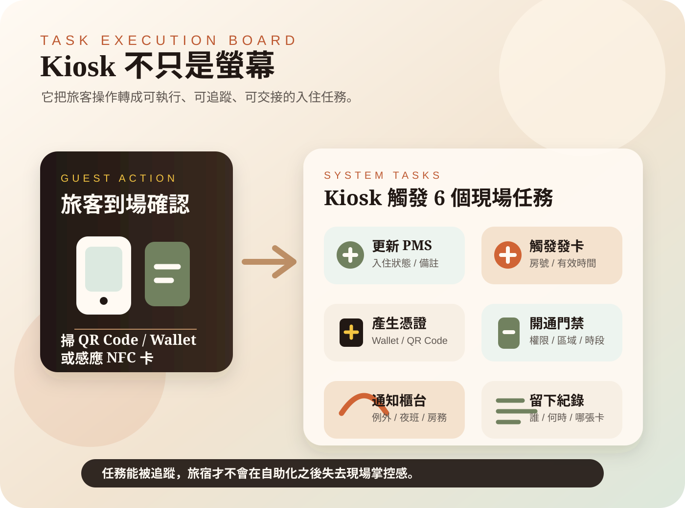
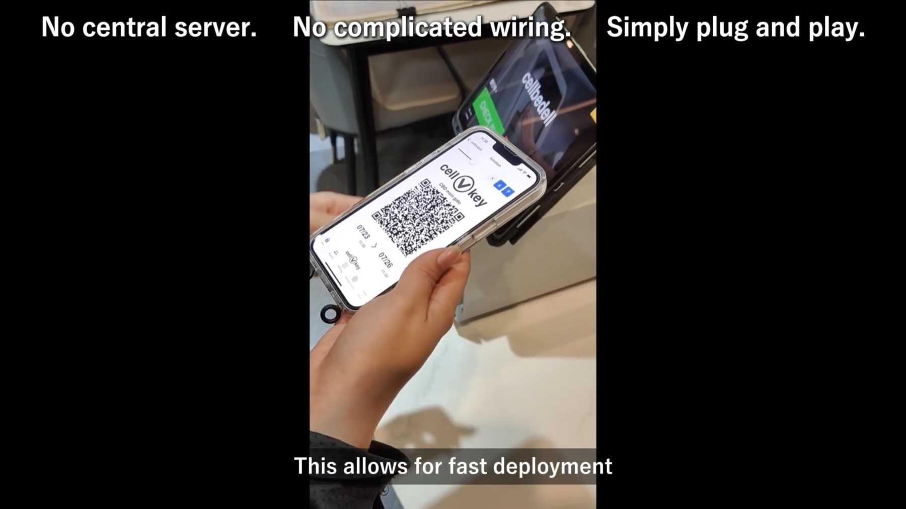
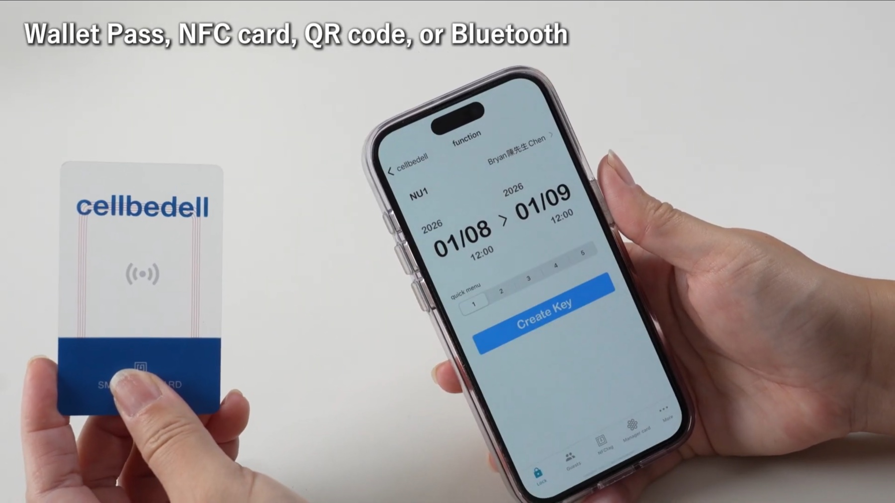
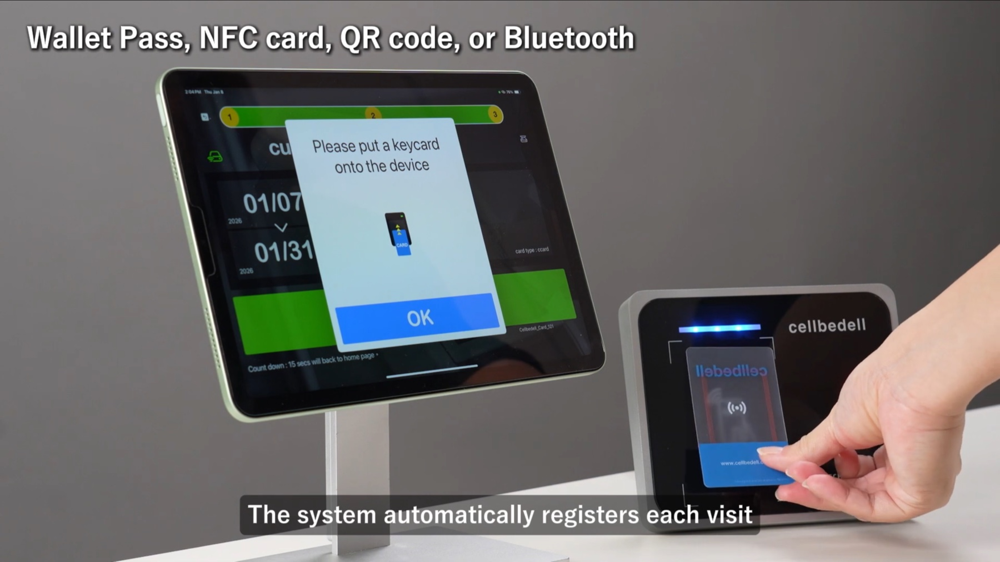
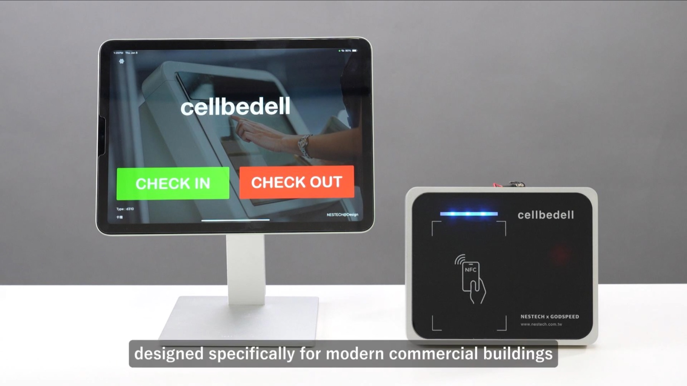
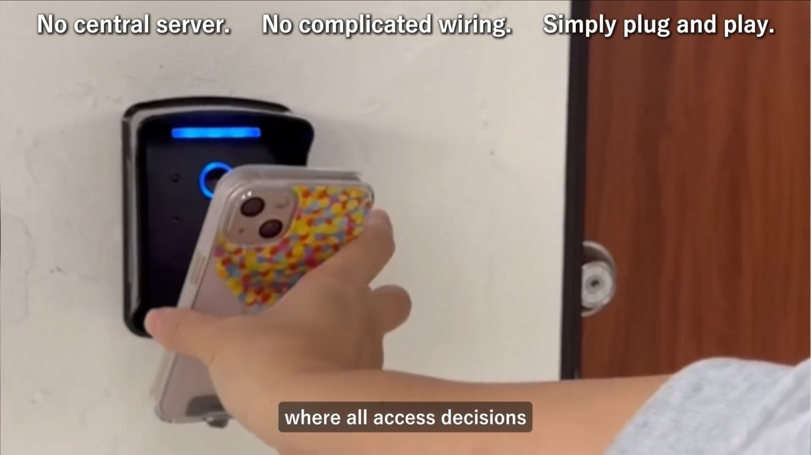

旅客走到 Kiosk 前，掃描 QR Code、感應 Wallet Pass，或放上一張 NFC 卡。從旅客角度看，這像是一個很簡單的動作：確認身份、拿到房卡、進房。
但對旅宿現場來說，這一步不應該只是「讀取資料」。真正有價值的 Kiosk，應該把旅客操作轉成一組可以執行、追蹤、交接的任務。它不是把櫃台變成螢幕，而是把入住流程裡原本散落在 PMS、發卡機、門禁設備、櫃台人員與房務之間的工作，整理成一條清楚的任務線。
先看現場：旅客只做一次確認
在一個理想的抵達現場，旅客不需要重新填一輪資料。手機拿出來，掃描 QR Code、感應 Wallet Pass 或 NFC 卡，Kiosk 讀到已完成的 pre check-in 狀態，接著確認是否可以入住。
旅客看到的是一次簡單確認：資料對了、付款完成了、房間可入住，就拿到房卡或通行憑證。但這個「簡單」不是因為系統什麼都沒做，而是因為很多任務已經被藏在背景裡。
Kiosk 的下一步，是任務化
如果 Kiosk 只是讓旅客重新填一次姓名、電話、證件與訂單號，那它其實只是另一個比較漂亮的表單。旅客可能不用排櫃台，但仍然在做櫃台原本要做的資料輸入。
任務化的 Kiosk 則不一樣。它會先讀取旅客已完成的 pre check-in 狀態，再判斷現在可以做什麼：可以更新 PMS 入住狀態嗎？可以發卡嗎？可以產生 Wallet Pass 或 QR Code 嗎？門禁權限是否已經可以開通？如果不行，是要補資料、重新付款，還是通知櫃台接手？
這種設計讓 Kiosk 從「資料收集機」變成「現場任務入口」。它不只是顯示畫面，而是能把每個旅客操作接到後方流程。
一次到場確認，背後至少會觸發 6 個任務

旅客完成 pre check-in 後抵達現場，看起來只是在 Kiosk 上做最後確認，但背後通常會牽涉多個任務。
- 更新 PMS 狀態：把旅客從預抵達、已確認、已入住等狀態往前推進。
- 觸發發卡：把房號、入住日、退房日與有效權限寫入房卡。
- 產生憑證：依情境產生 QR Code、Wallet Pass 或手機通行憑證。
- 開通門禁：把可進入的房間、樓層、公區與有效時間同步到門禁規則。
- 通知櫃台：遇到付款、身份、房務或晚到等例外時，把狀態交給人處理。
- 留下紀錄：保存誰在什麼時間完成哪一步、哪張卡被發出、哪組權限被啟用。
這些任務如果沒有被整理，Kiosk 很容易變成「看起來自助，實際上仍要人工補洞」的設備。真正能減輕現場壓力的，是任務有被正確觸發，而且有留下紀錄。

PMS API 決定 Kiosk 能不能真的做事
Kiosk 要從畫面變成任務入口，前提是它能讀取並更新 PMS 裡的關鍵資料。PMS 是旅宿營運的資料核心，包含訂單、房型、房號、入住時間、付款狀態、房務狀態與旅客備註。
如果 Kiosk 只能顯示旅客輸入的資料，卻不能和 PMS 狀態同步，那它做不了太多事。它不知道房間是否已清潔，不知道付款是否完成，也不知道旅客是否已經被分配房號。
透過 PMS API，Kiosk 才能在現場做出比較可靠的判斷：這位旅客可以入住嗎？要發哪一張卡？權限有效到什麼時候？是否需要櫃台確認？這些問題都不是介面設計可以單獨解決的，而是資料與任務串接的問題。

Cellbedell 的重點：無主機、隨插即用，但任務要可追蹤
Cellbedell kiosk 採用 plug & play 架構，不需要中央主機，也不需要另外部署 host PC。這件事對中小旅宿很重要，因為現場通常沒有餘裕為了一套自助入住系統重新整理機房、布線或安排一台電腦長時間維護。
但 plug & play 不只是安裝比較輕。更重要的是，設備接上後要能成為現場任務節點：讀取 QR Code、Wallet Pass 或 NFC 卡，確認旅客狀態，指示發卡機寫卡，或讓門禁設備依照已授權條件完成進門判斷。

也就是說，Kiosk 不是孤立螢幕；它應該和 PMS、發卡機、門禁設備、邊緣運算硬體一起作動。這樣旅宿才不只是少一個櫃台步驟，而是多了一條能被管理的現場流程。

任務要能交接，例外才不會卡住旅客
自助入住一定會遇到例外。旅客可能付款未完成、證件資料不完整、訂單日期錯誤、房間還沒清潔好，或是臨時要求提早入住、換房、延遲退房。
好的 Kiosk 不應該假裝所有事情都能自動化。它應該把例外清楚交給人：告訴旅客下一步是什麼，也讓櫃台知道目前卡在哪裡。這樣人員接手時，不需要從頭再問一次。
任務化的價值就在這裡。標準流程交給系統快速完成；例外流程交給人判斷。Kiosk 負責把狀態整理清楚，而不是讓旅客在螢幕前猜下一步。
從 Kiosk 到 Stay，任務會繼續往後延伸
當 Kiosk 能把入住變成任務，下一步就不只是 check-in。入住後的房務需求、早餐加購、訪客通行、維修回報、延遲退房，也都可以逐步接進同一套任務邏輯。

這會讓旅宿科技從「設備導入」走向「服務流程設計」。Kiosk 是起點，但真正值得追的，是它如何把 PMS、Wallet、門禁、AI agent 和現場人員串起來，讓旅客從抵達到住宿期間都少一點摩擦。
對旅客來說，好的科技應該是更快抵達、更少等待、更少重複說明。對旅宿來說，好的科技則是每一步都有紀錄、每個例外都能交接、每個權限都能管理。Kiosk 作為任務執行點，正是在這兩者之間搭起橋。